模块、对外接口与金属互连
从“计算什么、与谁交换数据”，读到“单元实际在哪里、每段连接走哪些金属层”。
总报告 · 线长报告 · 本页统一梳理 Gemmini、openTPU 与 llaccel 的模块接口及布线，不替代全项目统计。
阅读方式：图直接展示、关键结论和关键表保留在正文；完整端口表与复核材料放折叠区。箭头标注的是当前实例的接口位宽，示意框图不表示实际物理边界。
1. 先确定：在比较哪个层级的模块？
“对外接口”始终相对所画的模块而言。Gemmini 本次物理设计的顶层是 MeshWithDelays；openTPU 的 MXU、VPU、TMEM、ACT_RAM，以及 llaccel 的 GEMM、VECTOR 都是各自核心内部的逻辑模块。内部模块没有与黑箱示意框重合的固定物理引脚边界。
| 对象 | 当前分析范围 | 与其他对象的关系 |
|---|---|---|
| Gemmini 4×4 | MeshWithDelays：4×4 INT8 阵列及数据对齐、控制和标签逻辑 | 更接近 openTPU 的阵列核心层级；不是完整 Gemmini 系统 |
| openTPU MXU | 命令保存、取数／FIFO、整数乘加阵列、结果 FIFO、FP32 后处理 | 本次黑箱范围比阵列本身更大，不能直接用端口 bit 数判优劣 |
| openTPU VPU | FP32 向量运算、复合函数与归约 | 经 TMEM 读写，与 MXU 没有一条取代 TMEM 的专用结果直连总线 |
| openTPU TMEM | 共享 SRAM、读写选择、数据寄存、保持和旁路逻辑 | 服务 MXU、VPU、DMA、QUANT、COLL 等多个访问方 |
| openTPU ACT_RAM | 量化激活和尺度记录的专用输入缓冲 | 由量化器写入，主要供 MXU 读取 |
| openTPU QUANT / SEQUENCER / DMA | 本报告解释它们在数据流中的职责 | 未为这些模块新增完整逐端口、逐路径布线统计 |
| llaccel GEMM / VECTOR | 矩阵与向量引擎；共享 SRAM crossbar | 功能上可对应 MXU / VPU，但算术格式、接口组织和追踪端点不同 |
| llaccel SRAM crossbar | 按 bank 仲裁、地址分发与数据选路 | 仅是连接逻辑，不能直接等同于包含 SRAM 宏的 TMEM |
| llaccel SRAM bank 存储体 | 位于 llaccel_core 之外 | 当前 ODB 只到 bank 引脚，不包含 SRAM 宏的位置及其内部金属 |
2. openTPU：一份数据怎样在模块之间流转？
- MXU 做矩阵运算，VPU 做一般 FP32 向量运算。VPU 可以处理 MXU 的结果，也可以独立执行预处理、逐元素运算和归约。
- TMEM 是共享工作存储。计算结果可以先保存，再由 VPU、量化器或其他单元读取；它不是仅服务 MXU 的辅助部件。
- ACT_RAM 保存下一次 MXU 所需的量化输入。“激活数据”与“激活函数”是不同概念。
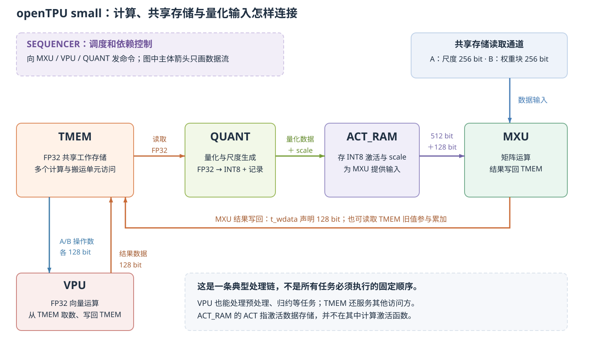
例如，MXU 将 FP32 结果写入 TMEM 后，VPU 可以读取它来加偏置、残差相加、缩放或执行激活相关运算，再将结果写回；量化器也可以读取 TMEM，将数据转为 INT8 和尺度记录写入 ACT_RAM，供后续矩阵任务复用。具体经过哪些步骤由指令和任务决定。
展开：VPU 的激活函数、TMEM 的绑定关系，以及 A/B 命名
VPU 的基本操作包含加、减、乘、最大／最小、复制，以及 EXP2、RECIP、RSQRT、LOG2 和多种归约。ReLU 可以用 MAX(x,0) 实现；更复杂的函数可以通过运算序列和近似组合，不能把它们都解释为一个独立的“激活函数硬块”。本报告未通过整模型执行来证明某个具体网络一定使用了某组指令。
VPU 与 TMEM 的数据交换关系很强，但不是硬宏层面的物理绑定，也不意味着 TMEM 专属于 VPU。MXU 的 A/B 是共享存储读取通道名，VPU 的 A/B 是两个操作数接口名，Gemmini 的 A/B 是矩阵输入名；三处命名不能直接一一对应。
3. Gemmini 4×4：阵列黑箱需要哪些接口？
4×4 说的是计算阵列规模；32 bit、128 bit 说的是一拍接口能承载多少位数据。
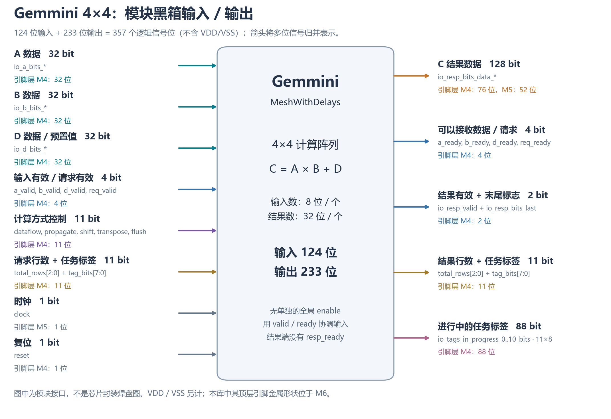
| 容易混淆的数字 | 这里的含义 |
|---|---|
| A / B / D 各 32 bit | 每路为 4 个 8 bit 数。4×4 矩阵不是一次由这 32 bit 全部传完；数据按行／节拍进入阵列。 |
| D 输入 | 预装初值／累加项，可以把运算意图理解为 C=A×B+D；不是又增加一次矩阵乘法。实际装载和传播由控制方式决定。 |
| 结果 128 bit | 一组 4 个 32 bit 结果。输入 8 bit 与结果 32 bit 使用不同位宽，以容纳乘加结果。 |
| 结果行数＋任务标签 11 bit | 3 bit 行数信息＋8 bit 标签。标签用于把结果与请求对应，不是计算数据。8 bit 可编码 256 个值，不代表 256 个任务同时执行。 |
| 进行中的任务标签 88 bit | 11 个标签槽位，各 8 bit；不是 88 个任务，也不是 88 个使能。槽位数量与流水／跟踪接口有关，不能由 4×4 的 PE 数直接推出。 |
接口通过 valid/ready 协调数据和请求输入，没有单独的全局 enable；结果端有 valid 和 last，当前接口没有 resp_ready。行数、标签、计算方式、握手与时钟复位都应与数值数据分开理解。
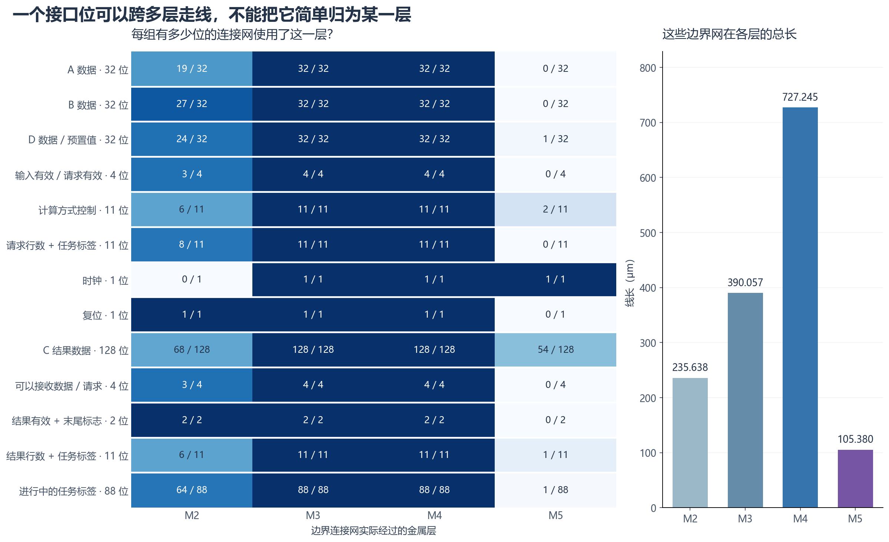
完整接口分组与引脚层表
| 接口功能组 | 相对 Gemmini 方向 | bit | 物理边界引脚所在层 |
|---|---|---|---|
| A 数据 | 输入 | 32 | M4：32 bit |
| B 数据 | 输入 | 32 | M4：32 bit |
| D 数据 / 预置值 | 输入 | 32 | M4：32 bit |
| 输入有效 / 请求有效 | 输入 | 4 | M4：4 bit |
| 计算方式控制 | 输入 | 11 | M4：11 bit |
| 请求行数 + 任务标签 | 输入 | 11 | M4：11 bit |
| 时钟 | 输入 | 1 | M5：1 bit |
| 复位 | 输入 | 1 | M4：1 bit |
| C 结果数据 | 输出 | 128 | M4：76 bit、M5：52 bit |
| 可以接收数据 / 请求 | 输出 | 4 | M4：4 bit |
| 结果有效 + 末尾标志 | 输出 | 2 | M4：2 bit |
| 结果行数 + 任务标签 | 输出 | 11 | M4：11 bit |
| 进行中的任务标签 | 输出 | 88 | M4：88 bit |
4. openTPU MXU：一个矩阵任务的取数与回写接口
- 声明输入 1,529 bit、输出 643 bit，共 37 个命名端口；这是当前分层网表的逻辑宽度。
- ACT_RAM 返回激活 512 bit 和尺度记录 128 bit；A 口读取权重尺度，B 口读取权重块，各有 256 bit 返回数据。
- 结果写回 TMEM；TMEM 数据接口声明为 4×32 bit，不代表 small 的单条 FP32 后处理通路每拍产生 4 个独立结果。
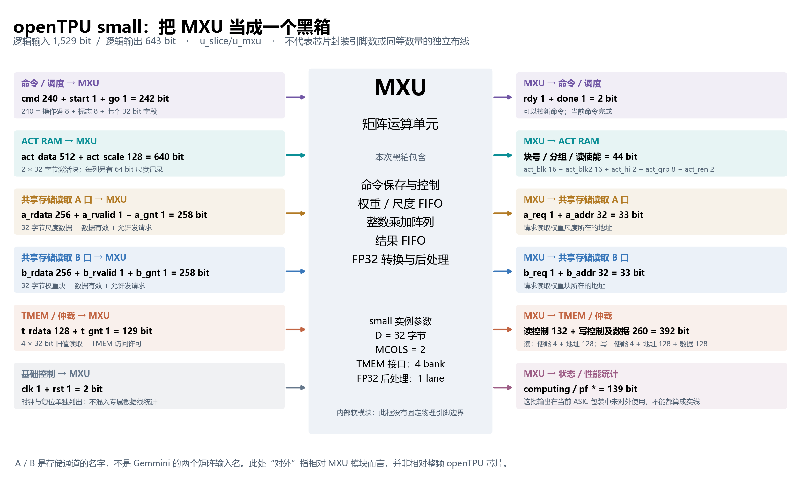
cmd 240 bit 是一份命令记录：操作码 8 bit、标志 8 bit、七个 32 bit 字段，用来传递地址、维度、步长和运算参数。start、go、rdy、done 才是单独的任务协调信号；字段位宽不能直接当成使能数量。
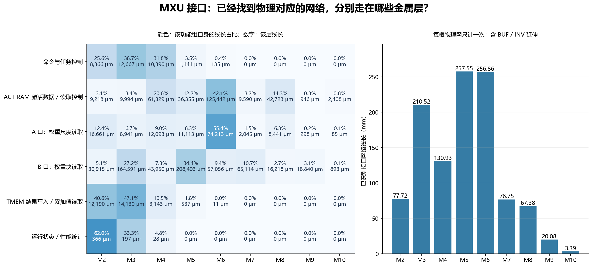
在这一接口范围内，ACT 相关连接以 M6 为主，权重 B 口分散在 M3、M5 等层；命令与任务控制主要在 M2～M4。共享存储的同信号分支还可能通向 DMA、调度等单元，不能将整组长度归为 MXU 独占。
共 2,172 个声明 bit，其中 1,773 bit 找到可靠物理对应，397 bit 未找到保留名称，时钟／复位 2 bit 单列。139 bit 状态／性能输出中，有内部仍在使用的 computing 1 bit 和 pf_level 7 bit 被定位；不能把顶层未接出的统计端口一概理解为全部没有内部线路。
展开 MXU 全部 37 个命名端口：位宽、含义与物理定位
| 命名端口 | 相对本模块方向 | 声明 bit | 含义 | 物理定位／配置状态 |
|---|---|---|---|---|
clk | 输入 | 1 | 全局时钟。 | 时钟／复位单列 |
rst | 输入 | 1 | MXU 的复位控制。 | 时钟／复位单列 |
a_req | 输出 | 1 | 请求 A 口读取；A 口负责权重尺度。 | 已定位 1/1 bit；未定位不等于不存在 |
a_addr | 输出 | 32 | A 口地址，32 bit。 | 已定位 30/32 bit；未定位不等于不存在 |
a_rvalid | 输入 | 1 | A 口返回数据有效。 | 已定位 1/1 bit；未定位不等于不存在 |
a_rdata | 输入 | 256 | A 口返回的 32 字节对齐尺度数据。 | 已定位 256/256 bit；未定位不等于不存在 |
b_req | 输出 | 1 | 请求 B 口读取；B 口负责权重数据块。 | 已定位 1/1 bit；未定位不等于不存在 |
b_addr | 输出 | 32 | B 口地址，32 bit。 | 已定位 30/32 bit；未定位不等于不存在 |
b_rvalid | 输入 | 1 | B 口返回的这一份数据属于 MXU 且有效。 | 已定位 1/1 bit；未定位不等于不存在 |
b_rdata | 输入 | 256 | B 口返回一个 32 字节权重块；INT8 为 32 个元素，4 bit 格式可装 64 个编码。 | 已定位 256/256 bit；未定位不等于不存在 |
act_data | 输入 | 512 | 两列各 256 bit，即每列一个 32 字节激活数据块；INT8 时每列可装 32 个元素。 | 已定位 512/512 bit；未定位不等于不存在 |
act_ren | 输出 | 2 | 两列各一位：允许对应 ACT RAM 读寄存器前进。 | 已定位 2/2 bit；未定位不等于不存在 |
start | 输入 | 1 | 调度器通知：现在接收这一条命令，可先预取权重与尺度。只在 rdy 允许时发出。 | 已定位 0/1 bit；未定位不等于不存在 |
cmd | 输入 | 240 | 命令字段：操作码 8 bit、标志 8 bit、w1–w7 各 32 bit。MXU 使用其中的基地址、维度、步长、格式等；未使用字段可能被综合删除。 | 已定位 209/240 bit；未定位不等于不存在 |
rdy | 输出 | 1 | MXU 能接收新命令；不代表每一路数据都准备好。 | 已定位 1/1 bit；未定位不等于不存在 |
done | 输出 | 1 | 当前命令处理完成的脉冲。 | 已定位 1/1 bit；未定位不等于不存在 |
b_gnt | 输入 | 1 | 共享存储仲裁器允许这次 B 口请求。 | 已定位 1/1 bit；未定位不等于不存在 |
t_ren | 输出 | 4 | 4 个 TMEM bank 各一位读请求。 | 已定位 4/4 bit；未定位不等于不存在 |
t_raddr | 输出 | 128 | 4 bank × 32 bit 读地址。 | 已定位 56/128 bit；未定位不等于不存在 |
t_rdata | 输入 | 128 | 4 bank × 32 bit 旧结果读取，供 ACC / ASCALE 等操作使用。 | 已定位 64/128 bit；未定位不等于不存在 |
t_wen | 输出 | 4 | 4 个 TMEM bank 各一位写请求。 | 已定位 4/4 bit；未定位不等于不存在 |
t_waddr | 输出 | 128 | 4 bank × 32 bit 写地址。 | 已定位 56/128 bit；未定位不等于不存在 |
t_wdata | 输出 | 128 | 4 bank × 32 bit 写数据的接口集合。small 的 FP32 后处理只有 1 lane，不能据此认定每拍产出 4 个独立结果。 | 已定位 128/128 bit；未定位不等于不存在 |
go | 输入 | 1 | 调度器通知：这一条已接收命令现在可以开始消费数据、执行运算。它与 start 分开，便于提前取数。 | 已定位 1/1 bit；未定位不等于不存在 |
computing | 输出 | 1 | 本拍消费了一个计算数据块；不是通用 busy 信号。 | 已定位 1/1 bit；未定位不等于不存在 |
pf_level | 输出 | 7 | 权重 FIFO 占用项数 0–64，因此使用 7 bit。 | 已定位 7/7 bit；未定位不等于不存在 |
pf_starve | 输出 | 1 | 仍有工作，但 FIFO 没有数据块。 | 已定位 0/1 bit；未定位不等于不存在 |
pf_block | 输出 | 1 | 仍有工作、FIFO 有块，但本拍没有消费。 | 已定位 0/1 bit；未定位不等于不存在 |
pf_u | 输出 | 1 | 一组性能计数结果更新的标记。 | 已定位 0/1 bit；未定位不等于不存在 |
pf_uv | 输出 | 128 | 4 × 32 bit 计数结果：deny、frz、bp、starve。128 bit 是四个数值，不是 128 个使能信号。 | 已定位 0/128 bit；未定位不等于不存在 |
act_blk | 输出 | 16 | 激活读取块号（16 bit）。 | 已定位 5/16 bit；未定位不等于不存在 |
act_blk2 | 输出 | 16 | 另一激活块号（16 bit），用于 PAIR 模式。 | 已定位 5/16 bit；未定位不等于不存在 |
act_hi | 输出 | 2 | 每列选择低 / 高块的标记（2 bit）。 | 已定位 2/2 bit；未定位不等于不存在 |
act_grp | 输出 | 8 | 激活行组的索引（8 bit）；当前 small 配置能用到的范围较窄。 | 已定位 8/8 bit；未定位不等于不存在 |
act_scale | 输入 | 128 | 两列各 64 bit，记录包含 Sa 和四个组的尺度编码；不是又一块 128 bit 矩阵数据。 | 已定位 128/128 bit；未定位不等于不存在 |
a_gnt | 输入 | 1 | 共享存储仲裁器允许这次 A 口请求。 | 已定位 1/1 bit；未定位不等于不存在 |
t_gnt | 输入 | 1 | TMEM 仲裁给 MXU 的访问许可；后处理及读改写流程据此推进。 | 已定位 1/1 bit；未定位不等于不存在 |
5. VPU：两个操作数输入，一路结果写回
VPU 主要通过 TMEM 取得 A/B 两路 FP32 操作数并写回结果。当前 small 为 4 条常规 lane，复合函数长通路为 1 条；声明的两路输入和结果数据都是 128 bit。
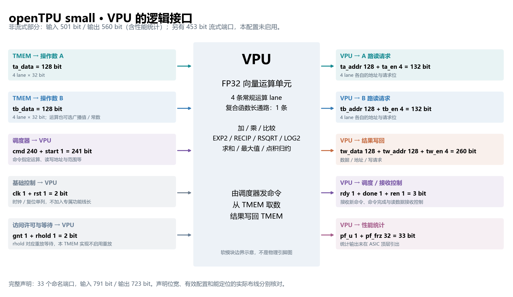
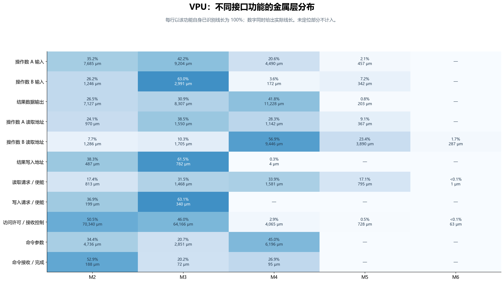
完整模板有 33 个命名端口，输入 791 bit、输出 723 bit；其中未启用流式输入 290 bit、输出 163 bit。剩下 1,061 bit 非流式声明中，618 bit 已定位、441 bit 未找到可靠保留名称、时钟复位 2 bit 单列。未定位项可能涉及未用字段、别名和优化，不能全部当成断线。
展开 VPU 全部 33 个命名端口
| 命名端口 | 相对本模块方向 | 声明 bit | 含义 | 物理定位／配置状态 |
|---|---|---|---|---|
clk | 输入 | 1 | 时钟。 | 时钟／复位／调试单列 |
rst | 输入 | 1 | VPU 复位。 | 时钟／复位／调试单列 |
gnt | 输入 | 1 | slice 仲裁器允许 VPU 使用 TMEM 的访问许可。 | 已定位 1/1 bit |
ss_req | 输入 | 1 | 流式引擎接口；当前 HAS_DSTEP=0，未启用。 | 本配置未启用／固定输出 |
ss_gnt | 输出 | 1 | 流式引擎接口；当前 HAS_DSTEP=0，未启用。 | 本配置未启用／固定输出 |
ss_pe | 输入 | 1 | 流式引擎接口；当前 HAS_DSTEP=0，未启用。 | 本配置未启用／固定输出 |
ss_in_v | 输入 | 1 | 流式引擎接口；当前 HAS_DSTEP=0，未启用。 | 本配置未启用／固定输出 |
ss_y_v | 输出 | 1 | 流式引擎接口；当前 HAS_DSTEP=0，未启用。 | 本配置未启用／固定输出 |
ss_o_v | 输出 | 1 | 流式引擎接口；当前 HAS_DSTEP=0，未启用。 | 本配置未启用／固定输出 |
ss_cfg | 输入 | 23 | 流式引擎接口；当前 HAS_DSTEP=0，未启用。 | 本配置未启用／固定输出 |
ss_fk | 输入 | 3 | 流式引擎接口；当前 HAS_DSTEP=0，未启用。 | 本配置未启用／固定输出 |
ss_fi | 输入 | 5 | 流式引擎接口；当前 HAS_DSTEP=0，未启用。 | 本配置未启用／固定输出 |
ss_in_d | 输入 | 128 | 流式引擎接口；当前 HAS_DSTEP=0，未启用。 | 本配置未启用／固定输出 |
ss_fd | 输入 | 128 | 流式引擎接口；当前 HAS_DSTEP=0，未启用。 | 本配置未启用／固定输出 |
ss_y_d | 输出 | 128 | 流式引擎接口；当前 HAS_DSTEP=0，未启用。 | 本配置未启用／固定输出 |
ss_o_d | 输出 | 32 | 流式引擎接口；当前 HAS_DSTEP=0，未启用。 | 本配置未启用／固定输出 |
ren | 输出 | 1 | 读数据接收 / 相关流水线推进控制。 | 已定位 0/1 bit |
start | 输入 | 1 | 调度器通知 VPU 接收当前命令。 | 已定位 0/1 bit |
cmd | 输入 | 240 | 操作码、标志和七个 32 bit 字段；描述运算、地址、范围等。 | 已定位 162/240 bit |
rdy | 输出 | 1 | 可以接收新命令。 | 已定位 1/1 bit |
done | 输出 | 1 | 当前命令完成。 | 已定位 1/1 bit |
pf_u | 输出 | 1 | 性能计数更新标记。 | 已定位 0/1 bit |
pf_frz | 输出 | 32 | 统计因访问许可等原因等待的计数值。 | 已定位 0/32 bit |
rhold | 输入 | 1 | 读请求发生重放时等待；本例 TMEM_IMPL=1，不使用 IMPL=3 的重放功能。 | 已定位 0/1 bit |
ta_en | 输出 | 4 | 操作数 A 的逐 lane 读取请求。 | 已定位 4/4 bit |
ta_addr | 输出 | 128 | A 路 4×32 bit 读地址。 | 已定位 18/128 bit |
ta_data | 输入 | 128 | TMEM 返回 A 路 4×32 bit FP32 数据。 | 已定位 128/128 bit |
tb_en | 输出 | 4 | 操作数 B 的逐 lane 读取请求。 | 已定位 4/4 bit |
tb_addr | 输出 | 128 | B 路 4×32 bit 读地址。 | 已定位 19/128 bit |
tb_data | 输入 | 128 | TMEM 返回 B 路 4×32 bit FP32 数据。 | 已定位 128/128 bit |
tw_en | 输出 | 4 | 逐 lane 的结果写请求。 | 已定位 4/4 bit |
tw_addr | 输出 | 128 | 结果的 4×32 bit 写地址。 | 已定位 20/128 bit |
tw_data | 输出 | 128 | 结果的 4×32 bit FP32 写数据。 | 已定位 128/128 bit |
6. TMEM 与 ACT_RAM：存什么、怎样组织、怎样访问？
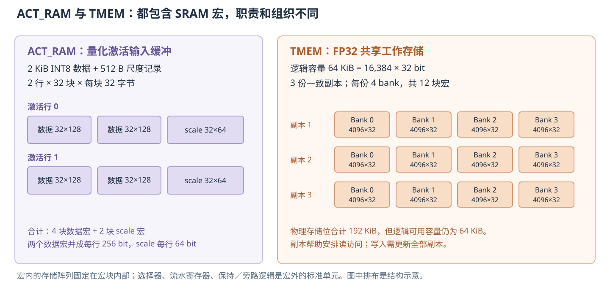
| 观察点 | ACT_RAM | TMEM |
|---|---|---|
| 主要职责 | 保存量化后的 MXU 激活输入 | 保存多个单元共享的 FP32 工作数据和计算结果 |
| 写入／访问方 | 量化器写入，MXU 读取；含复制写等控制 | MXU、VPU、DMA、QUANT、COLL 等共享访问 |
| 数据形式 | INT8 数据＋64 bit 尺度记录（每行每块） | 32 bit 字，常用于 FP32 数据 |
| 逻辑容量 | 2 KiB 数据＋512 B 尺度记录＝2.5 KiB | 64 KiB；物理 3 份一致副本合计 192 KiB |
| SRAM 宏 | 4×32×128 数据宏＋2×32×64 scale 宏 | 12×4096×32 宏，3 份副本×4 bank |
| 宏外逻辑 | 写入流水、字节定位、行／块选择等 | 读写选择、流水、保持、旁路等 |
| 能否视为一个硬宏 | 不能；它是包含多块硬宏的逻辑模块 | 不能；大 SRAM 宏只占该逻辑模块的一部分 |
6.1 TMEM 的多端口是逻辑访问接口
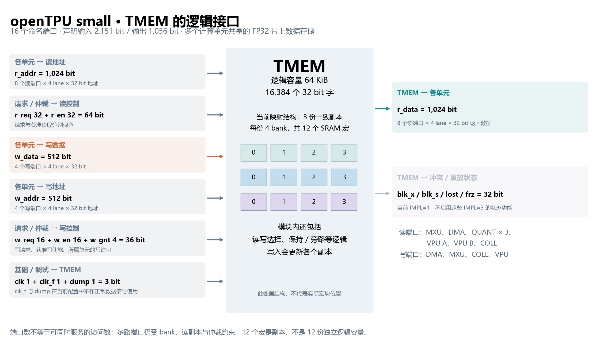
| 方向 | 接口序号与使用方 | 每个端口的声明数据／地址宽度 |
|---|---|---|
| 读 | 0 MXU；1 DMA；2 QUANT；3 VPU A；4 VPU B；5 QUANT_3；6 QUANT_2；7 COLL | 数据 128 bit＋地址 128 bit；请求／使能各 4 bit |
| 写 | 0 DMA；1 MXU；2 COLL；3 VPU | 数据 128 bit＋地址 128 bit；请求／使能各 4 bit，另有按访问方的写许可 |
展开 TMEM 全部 16 个命名端口与定位状态
| 命名端口 | 相对本模块方向 | 声明 bit | 含义 | 物理定位／配置状态 |
|---|---|---|---|---|
clk | 输入 | 1 | 主时钟。 | 时钟／复位／调试单列 |
clk_f | 输入 | 1 | 供倍频存储实现使用的时钟；当前实现不使用。 | 时钟／复位／调试单列 |
dump | 输入 | 1 | 仿真 / 调试控制，当前不作数据信号。 | 时钟／复位／调试单列 |
r_en | 输入 | 32 | 经过 slice 仲裁后获准的读使能：8×4 bit。 | 已定位 29/32 bit |
r_addr | 输入 | 1024 | 8 个读端口、每端口 4×32 bit 地址。 | 已定位 181/1024 bit |
r_data | 输出 | 1024 | 8 个读端口、每端口 4×32 bit 读数据返回。 | 已定位 864/1024 bit |
w_en | 输入 | 16 | 仲裁后获准的写使能：4×4 bit。 | 已定位 16/16 bit |
w_addr | 输入 | 512 | 4 个写端口、每端口 4×32 bit 写地址。 | 已定位 115/512 bit |
w_data | 输入 | 512 | 4 个写端口、每端口 4×32 bit 写数据。 | 已定位 512/512 bit |
w_gnt | 输入 | 4 | 4 个写端口所属单元各一位写访问许可。 | 已定位 3/4 bit |
r_req | 输入 | 32 | 仲裁前的读取请求：8×4 bit。 | 已定位 29/32 bit |
w_req | 输入 | 16 | 仲裁前的写请求：4×4 bit。 | 已定位 16/16 bit |
blk_x | 输出 | 8 | IMPL=3 的跨组冲突状态；本配置固定为 0。 | 本配置未启用／固定输出 |
blk_s | 输出 | 8 | IMPL=3 的同组冲突状态；本配置固定为 0。 | 本配置未启用／固定输出 |
lost | 输出 | 8 | IMPL=3 的丢失读取 / 待重放状态；本配置固定为 0。 | 本配置未启用／固定输出 |
frz | 输出 | 8 | IMPL=3 的正在重放状态；本配置固定为 0。 | 本配置未启用／固定输出 |
6.2 ACT_RAM 的读出很宽，量化写入较窄
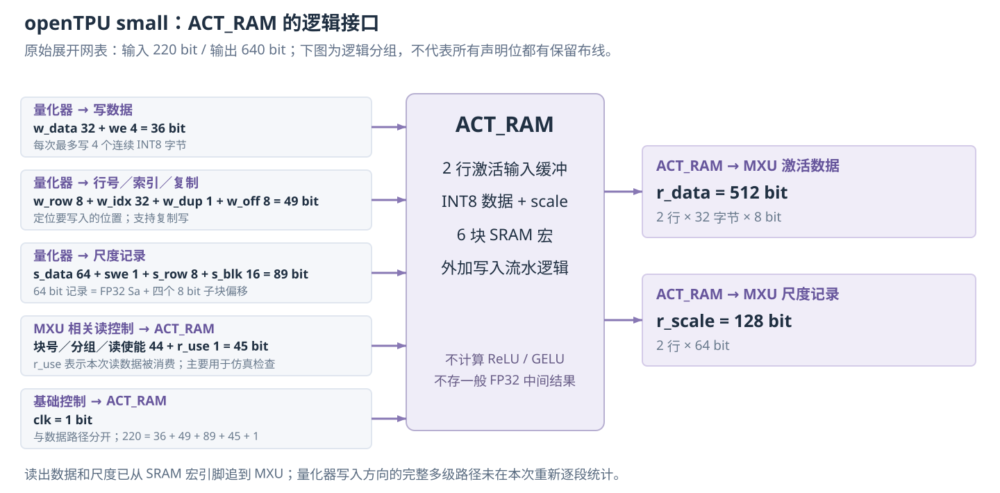
每个 64 bit 尺度记录包含一个 FP32 的 Sa 和四个 8 bit 子块偏移。ACT_RAM 本身不执行激活函数，也不替代 TMEM 保存一般 FP32 中间值。它把已量化数据留在片上，供 MXU 在后续权重计算中复用。
展开 ACT_RAM 全部 19 个命名端口与当前统计范围
| 命名端口 | 相对本模块方向 | 声明 bit | 含义 | 物理定位／配置状态 |
|---|---|---|---|---|
clk | 输入 | 1 | ACT_RAM 时钟。 | 本节仅核对声明；不假定逐位物理保留 |
r_data | 输出 | 512 | 两行各 256 bit，合计 512 bit 激活数据。 | 512/512 bit 读出已定位 |
w_data | 输入 | 32 | 4 个连续 INT8 字节。 | 本节仅核对声明；不假定逐位物理保留 |
we | 输入 | 4 | 4 个字节写使能，各对应一个 INT8 输入。 | 本节仅核对声明；不假定逐位物理保留 |
w_row | 输入 | 8 | 要写入的激活行号。 | 本节仅核对声明；不假定逐位物理保留 |
w_idx | 输入 | 32 | 行内字节位置。 | 本节仅核对声明；不假定逐位物理保留 |
w_dup | 输入 | 1 | 同时复制写到另一行的控制。 | 本节仅核对声明；不假定逐位物理保留 |
w_off | 输入 | 8 | 复制目的行相对当前行的偏移。 | 本节仅核对声明；不假定逐位物理保留 |
swe | 输入 | 1 | 允许写入尺度记录。 | 本节仅核对声明；不假定逐位物理保留 |
s_row | 输入 | 8 | 尺度记录对应的激活行。 | 本节仅核对声明；不假定逐位物理保留 |
s_blk | 输入 | 16 | 尺度记录对应的块。 | 本节仅核对声明；不假定逐位物理保留 |
s_data | 输入 | 64 | Sa FP32 与四个 8 bit 子块偏移，共 64 bit。 | 本节仅核对声明；不假定逐位物理保留 |
ren | 输入 | 2 | 两列各一位读推进使能。 | 本节仅核对声明；不假定逐位物理保留 |
r_use | 输入 | 1 | 本次读取的数据已被消费；RTL 用于仿真一致性检查，不能默认存在专用物理网。 | 本节仅核对声明；不假定逐位物理保留 |
r_blk | 输入 | 16 | 读取块号。 | 本节仅核对声明；不假定逐位物理保留 |
r_blk2 | 输入 | 16 | 配对读取使用的第二块号。 | 本节仅核对声明；不假定逐位物理保留 |
r_hi | 输入 | 2 | 各列选择普通或配对块号。 | 本节仅核对声明；不假定逐位物理保留 |
r_grp | 输入 | 8 | 激活行组索引；当前 ROWS=MCOLS。 | 本节仅核对声明；不假定逐位物理保留 |
r_scale | 输出 | 128 | 两行各 64 bit，合计 128 bit 尺度记录。 | 128/128 bit 读出已定位 |
7. 实际布局：同一个模块为何会分散、交错？

| 实际位置核对 | 坐标范围 / μm | 说明 |
|---|---|---|
| TMEM 的 12 块 SRAM 宏 | x≈5～641，y≈1065～2805 | 左侧大块，并不包含 TMEM 所有逻辑单元 |
| MXU 的 128 个写数据输出单元 | x≈957～1024，y≈1239～1345 | MXU 输出逻辑并非全在最右侧的主要计算区域 |
| TMEM 的 128 个写数据输入选择器 | x≈953～1024，y≈1236～1345 | 与上述 MXU 输出单元交错摆放 |
| VPU 等大面积颜色区域 | 不等于该模块独占的物理边界 | 其中可以穿插其他模块的少量标准单元 |
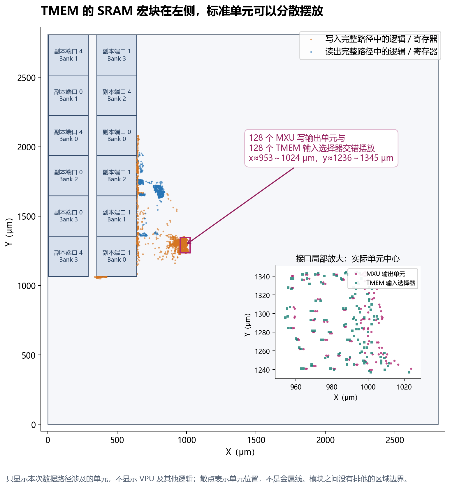
同理，ACT_RAM 数据宏位于底部，而 MXU 激活接收单元沿一片区域展开。把“模块主体看起来靠近”当成所有端口都邻近会有误差。若要尝试优化，应重点看宏引脚与对应接收单元的位置、朝向和通道，再比较线长、时序及拥塞。
Placement 类别、图间关系与推断边界
本节总览图采用原始模块归属：ACT_RAM、COLLECTIVE、DMA、MXU、QUANTIZER、SEQUENCER、SLICE_TOP_LOGIC、TMEM、VPU；UNKNOWN 表示原归属未查清，PHYSICAL_ONLY 表示填充、阱接触等物理辅助单元。这里沿用同一张原图，不能把图例中的 cell 数解释为完整模块或 PE 数。
数据路径局部图只从真实引脚连接选出相关单元，并使用其实际坐标，没有按邻近关系猜测模块；这与总览图覆盖范围不同。示意框图的颜色用于区分功能组，金属层图另有独立的层颜色图例，不能跨图仅凭颜色判断对象相同。
当前结果能证明接口单元彼此邻近、SRAM 宏较远。它不能单独证明“布局工具为了靠近 MXU，主动牺牲了 TMEM 内部距离”。确认布局选择的原因，还需要对应流程约束、拥塞和时序证据。
8. 金属层分布：先区分接口段，再看完整数据通路
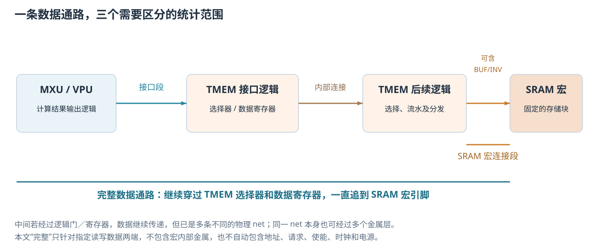
“MXU 输出数据接口使用 M2/M3”在当前逻辑接口范围内是正确的；“MXU 到 TMEM SRAM 的整个访问通路主要走低层”则不成立。VPU↔TMEM 也有同样的范围差别。以下补全统计沿真实数据引脚穿过 TMEM 组合逻辑和寄存器，追到 SRAM 宏引脚。
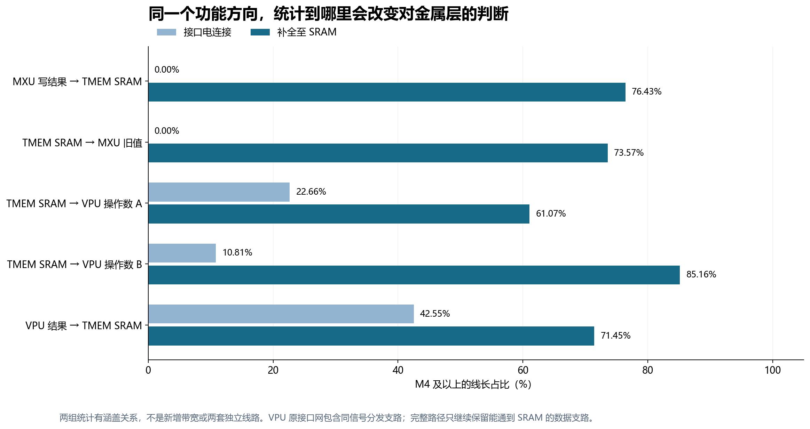
| 数据方向 | 接口连接：M4 及以上 | 补全至 SRAM：M4 及以上 |
|---|---|---|
| MXU 写结果 → TMEM SRAM | 0.00% | 76.43% |
| TMEM SRAM → MXU 旧值 | 0.00% | 73.57% |
| TMEM SRAM → VPU 操作数 A | 22.66% | 61.07% |
| TMEM SRAM → VPU 操作数 B | 10.81% | 85.16% |
| VPU 结果 → TMEM SRAM | 42.55% | 71.45% |
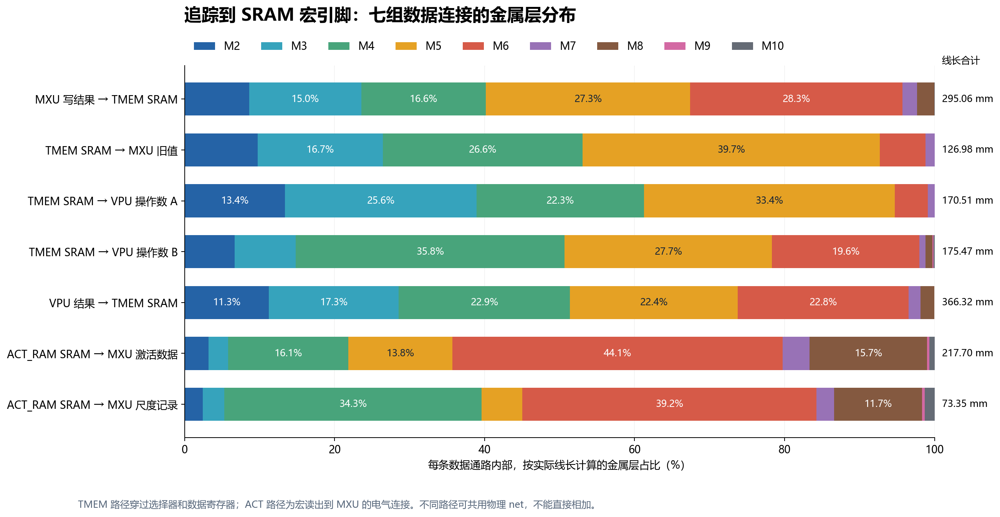
补全覆盖：MXU、VPU 写数据均追到 12 块 TMEM SRAM 的 384 个写数据引脚；MXU 旧值读取、VPU A、VPU B 各追到对应副本的 4 块 SRAM，共 128 个读数据引脚。MXU 当前实际保留的读接口为 64 bit，VPU A/B 各为 128 bit，均已找到从 SRAM 到达的路径。
8.1 为什么接口看起来全在低层，完整通路却不同？
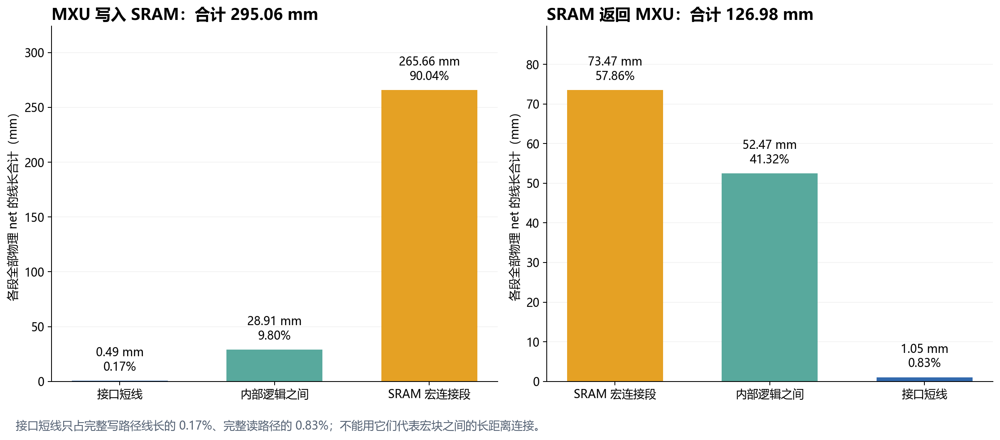
写入的 TMEM SRAM 宏连接段以 M5＋M6 为主，合计约 60.26%；读出宏连接段以 M5 为主，约 59.94%。ACT_RAM 激活数据电连接中，M6 约占 44.07%、M8 约占 15.67%，M2＋M3 仅约 5.80%。这些结果与宏引脚到分散标准单元之间存在长距离连接相符。
8.2 “跨模块越多，层越高”为什么不总成立？
| 连接例子 | 逻辑关系 | 物理关系与本次结果 |
|---|---|---|
| MXU 输出 → TMEM 输入选择器 | 跨越逻辑模块边界 | 单元紧邻，数据接口网全部使用 M2/M3 |
| TMEM 后续逻辑 → TMEM SRAM | 位于同一个逻辑模块内部 | 相隔较远，宏连接段大量使用 M5/M6 |
| ACT_RAM SRAM → MXU 接收逻辑 | 跨逻辑模块，同时有较长物理跨度 | 大部分数据线长在 M4 及以上 |
在没有强制独立物理区域的软模块设计中，判断金属层时应优先看实际跨度、拥塞、扇出和时序需求。高层与低层的具体用途还受技术库、线宽、方向和路由约束影响；本报告给出实际层分布，不从最终布线反推唯一的放置或选层原因。
完整通路线长、每 net 均值与范围
| 数据通路 | 去重物理 net 数 | 线长合计 / mm | 平均每 net / μm | 每 net 最小～最大 / μm | 主要金属层 |
|---|---|---|---|---|---|
| MXU 写结果 → TMEM SRAM | 1570 | 295.062 | 187.94 | 0.19～1110.05 | M6 28.3%、M5 27.3%、M4 16.6% |
| TMEM SRAM → MXU 旧值 | 666 | 126.983 | 190.66 | 0.38～797.54 | M5 39.7%、M4 26.6%、M3 16.7% |
| TMEM SRAM → VPU 操作数 A | 834 | 170.515 | 204.45 | 0.38～797.54 | M5 33.4%、M3 25.6%、M4 22.3% |
| TMEM SRAM → VPU 操作数 B | 837 | 175.474 | 209.65 | 0.38～962.28 | M4 35.8%、M5 27.7%、M6 19.6% |
| VPU 结果 → TMEM SRAM | 1553 | 366.320 | 235.88 | 0.19～1110.05 | M4 22.9%、M6 22.8%、M5 22.4% |
均值、最小和最大针对单条物理 net，不是每一位数据从计算单元到 SRAM 的总传播距离。路径会穿过逻辑门和寄存器，不能把所有 net 按一条串行路径理解。
接口功能分组的原有统计表（与完整路径不能混加）
| 模块 | 接口功能 | 物理 net 数 | 线长合计 / mm | 主要金属层 |
|---|---|---|---|---|
| MXU | 命令与任务控制 | 263 | 32.699 | M3 38.7%、M4 31.8%、M2 25.6% |
| MXU | ACT 数据、尺度及读控制 | 698 | 298.007 | M6 42.1%、M4 20.6%、M8 14.3% |
| MXU | A 存储口：尺度读取 | 609 | 133.891 | M6 55.4%、M2 12.4%、M4 9.0% |
| MXU | B 存储口：权重读取 | 1334 | 605.980 | M5 34.4%、M3 27.2%、M7 10.7% |
| MXU | TMEM 数据、地址及使能接口 | 435 | 30.011 | M3 47.1%、M2 40.6%、M4 10.5% |
| MXU | 内部仍使用的状态／统计 | 10 | 0.591 | M2 62.0%、M3 33.3%、M4 4.8% |
| VPU | 操作数 A 数据 | 128 | 21.836 | M3 42.2%、M2 35.2%、M4 20.6% |
| VPU | 操作数 B 数据 | 128 | 4.750 | M3 63.0%、M2 26.2%、M5 7.2% |
| VPU | 结果写回数据 | 161 | 26.865 | M4 41.8%、M3 30.9%、M2 26.5% |
| VPU | A 路读地址 | 35 | 4.029 | M3 38.5%、M4 28.3%、M2 24.1% |
| VPU | B 路读地址 | 54 | 16.615 | M4 56.9%、M5 23.4%、M3 10.3% |
| VPU | 写地址 | 24 | 1.272 | M3 61.5%、M2 38.3%、M4 0.3% |
| VPU | 读请求／使能 | 26 | 4.659 | M4 33.9%、M3 31.5%、M2 17.4% |
| VPU | 写请求／使能 | 8 | 0.539 | M3 63.1%、M2 36.9% |
| VPU | 访问许可及分发 | 803 | 139.363 | M2 50.5%、M3 46.0%、M4 2.9% |
| VPU | 命令参数 | 179 | 13.782 | M4 45.0%、M2 34.4%、M3 20.7% |
| VPU | 命令接收／完成 | 3 | 0.355 | M2 52.9%、M4 26.9%、M3 20.2% |
这张表只对应第 4、5 节的接口电连接提取。完整路径表针对数据负载；地址、使能、访问许可等仍保持接口范围，不冒充已经追到所有 SRAM 引脚的完整控制通路。
9. llaccel：计算引擎如何共用存储？
GEMM 与 VECTOR 的数据读写经共享 crossbar 到达 bank；本次物理分析在核心 bank 引脚处结束。
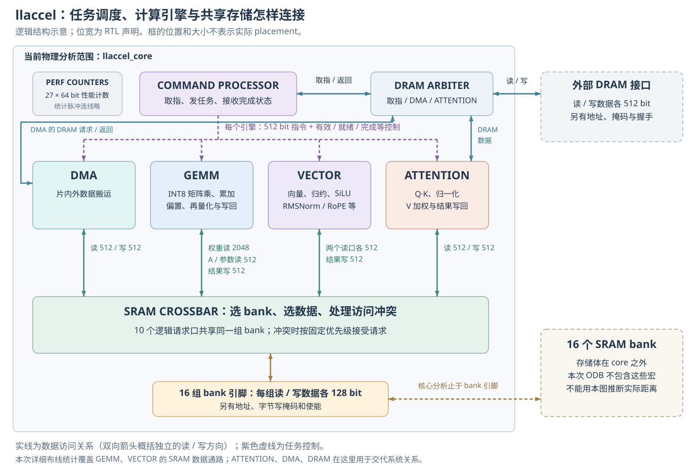
当前对象是 llaccel_core。16 个 bank 的存储体在核心之外，核心内部完成请求仲裁、地址分发、写数据选择和读数据拼接。本次只能统计到真实 bank 引脚，不能继续统计 SRAM 宏内部，也不能推断宏与引擎之间的摆放距离。
与 openTPU 作职能比较时，GEMM 类似 MXU，VECTOR 类似 VPU；SRAM crossbar 类似 TMEM 中负责连接与仲裁的部分。crossbar 本身不是存储器，不能把它直接等同于整个 TMEM。
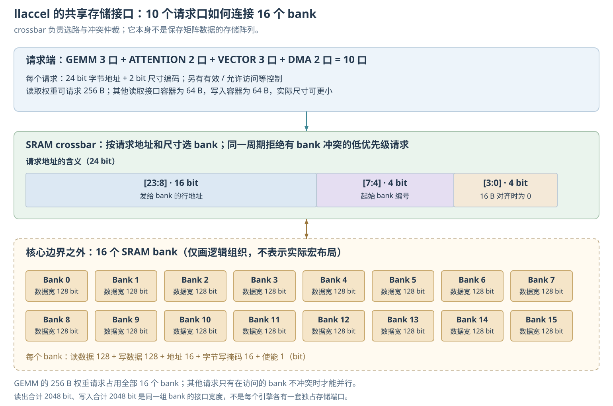
10. llaccel GEMM / VECTOR：黑箱接口示意
GEMM：矩阵乘、累加与输出处理
16 × 16 个 INT8 乘法单元配合求和与累加状态。权重按 256 B 的块装入双缓冲，A 按 16 B 的行流入；输出经过偏置、再量化，再写回 SRAM。
当前配置 EPILOGUE_FUSION=0。A 读取口也用来读取再量化参数和偏置，不能全标成“激活数据”。
VECTOR：向量与非线性处理
16 个通道，包含共享计算和归约逻辑。RTL 支持 RMSNorm、RoPE、SiLU、乘、加、量化等操作；从两个读口取操作数，经结果寄存器写回。
512 bit 是存储接口的声明宽度。本实现的操作数拆分器接收低 256 bit，结果保持也是 256 bit；不能据接口名推断每次都处理 512 bit 有效数据。
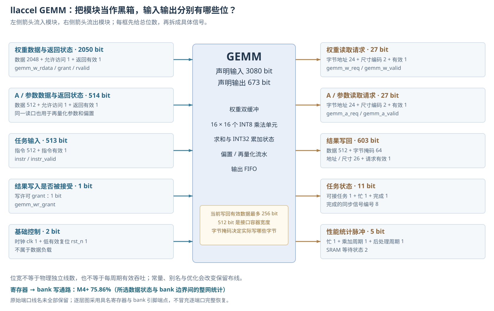
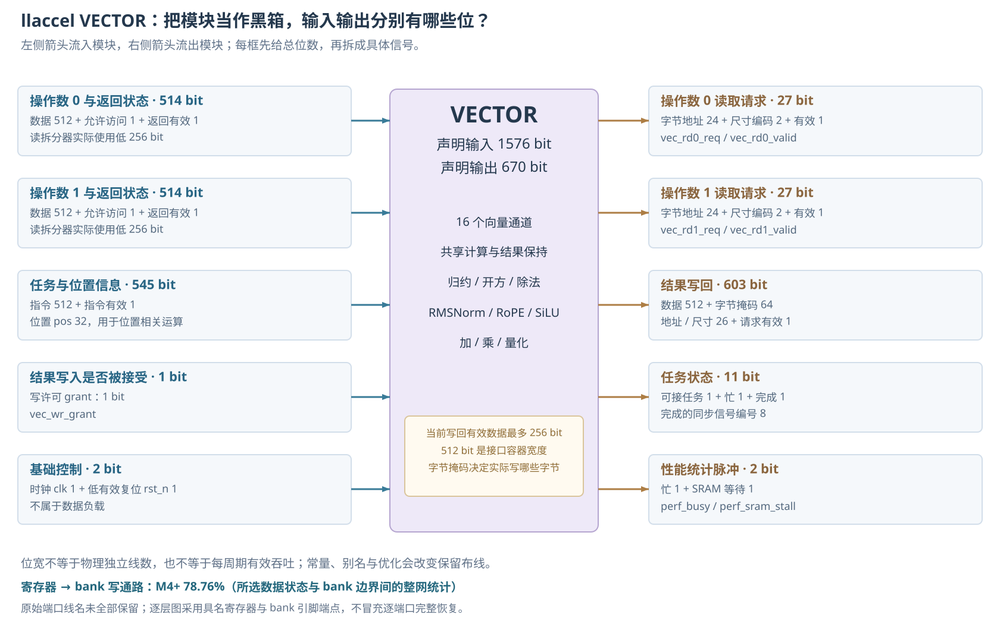
展开接口功能汇总表（示意图位宽的完整对照）
| 功能 | GEMM | VECTOR | 这些位做什么 |
|---|---|---|---|
| 读取数据 | 权重 2048 bit；A／参数 512 bit | 两个读口，各 512 bit | 2048 bit = 256 B；512 bit = 64 B，是一次传输的数据容器 |
| 读取请求 | 每个读口：请求有效 1 bit + 地址／尺寸 26 bit | 同左 | 26 bit = 24 位字节地址 + 2 位传输尺寸编码 |
| 读取返回控制 | 每个读口：允许访问 1 bit + 返回有效 1 bit | 同左 | grant 表示本周期接受；rvalid 表示读数据有效 |
| 结果写入 | 数据 512 bit + 字节掩码 64 bit | 同左 | 当前输出有效数据最多 256 bit，其余补零；掩码决定哪些字节实际写入 |
| 写请求与确认 | 有效 1 bit + 地址／尺寸 26 bit；输入 grant 1 bit | 同左 | 请求未获允许时，发送者需要保持请求 |
| 任务输入 | 指令 512 bit + 指令有效 1 bit | 同左，另有 pos 32 bit | 指令包含操作、地址、尺寸等；pos 用于位置相关运算 |
| 任务状态 | ready、busy、done 各 1 bit；完成标签 8 bit | 同左 | 可接新任务、忙、完成，以及完成的同步信号编号 |
| 时钟／复位与统计 | clk、rst_n 各 1 bit；统计脉冲输出 5 bit | clk、rst_n 各 1 bit；统计脉冲输出 2 bit | 统计脉冲不是结果数据 |
| 声明接口总位数 | 输入 3080 bit；输出 673 bit | 输入 1576 bit；输出 670 bit | 含时钟、复位、状态和统计信号；不代表全部保留为独立物理线 |
GEMM：展开全部 RTL 端口
| 方向 | 端口 | 声明位宽 |
|---|---|---|
| input | clk | 1 |
| input | rst_n | 1 |
| input | instr_valid | 1 |
| input | instr | 512 |
| output | instr_ready | 1 |
| output | busy | 1 |
| output | done_pulse | 1 |
| output | done_sig_sem | 8 |
| output | gemm_w_valid | 1 |
| output | gemm_w_req | 26 |
| input | gemm_w_grant | 1 |
| input | gemm_w_rvalid | 1 |
| input | gemm_w_rdata | 2048 |
| output | gemm_a_valid | 1 |
| output | gemm_a_req | 26 |
| input | gemm_a_grant | 1 |
| input | gemm_a_rvalid | 1 |
| input | gemm_a_rdata | 512 |
| output | gemm_wr_valid | 1 |
| output | gemm_wr_req | 26 |
| output | gemm_wr_wdata | 512 |
| output | gemm_wr_wstrb | 64 |
| input | gemm_wr_grant | 1 |
| output | perf_busy | 1 |
| output | perf_mac_cycle | 1 |
| output | perf_epilogue_cycle | 1 |
| output | perf_sram_stall | 2 |
VECTOR：展开全部 RTL 端口
| 方向 | 端口 | 声明位宽 |
|---|---|---|
| input | clk | 1 |
| input | rst_n | 1 |
| input | instr_valid | 1 |
| input | instr | 512 |
| output | instr_ready | 1 |
| input | pos | 32 |
| output | busy | 1 |
| output | done_pulse | 1 |
| output | done_sig_sem | 8 |
| output | vec_rd0_valid | 1 |
| output | vec_rd0_req | 26 |
| input | vec_rd0_grant | 1 |
| input | vec_rd0_rvalid | 1 |
| input | vec_rd0_rdata | 512 |
| output | vec_rd1_valid | 1 |
| output | vec_rd1_req | 26 |
| input | vec_rd1_grant | 1 |
| input | vec_rd1_rvalid | 1 |
| input | vec_rd1_rdata | 512 |
| output | vec_wr_valid | 1 |
| output | vec_wr_req | 26 |
| output | vec_wr_wdata | 512 |
| output | vec_wr_wstrb | 64 |
| input | vec_wr_grant | 1 |
| output | perf_busy | 1 |
| output | perf_sram_stall | 1 |
16 个 bank 每个提供 128 bit，合计 2048 bit。十个逻辑请求口按 bank 冲突仲裁；访问互不冲突的 bank 才能并行。GEMM 的整块权重读取占用全部 16 个 bank，不能把各引擎端口位宽直接相加当成并行带宽。
11. llaccel：数据状态到 bank 边界的金属分布
| 数据通路 | 物理网数 | 整网线长之和（mm） | M4 及以上 |
|---|---|---|---|
| GEMM 权重读取 | 29,321 | 2,216.85 | 69.36% |
| GEMM A／参数读取 | 105,220 | 2,723.76 | 59.33% |
| VECTOR 读口 0 | 16,292 | 1,973.59 | 73.84% |
| VECTOR 读口 1 | 15,710 | 1,797.90 | 72.53% |
| GEMM 结果写回 | 10,351 | 1,148.01 | 75.86% |
| VECTOR 结果写回 | 8,341 | 1,458.31 | 78.76% |
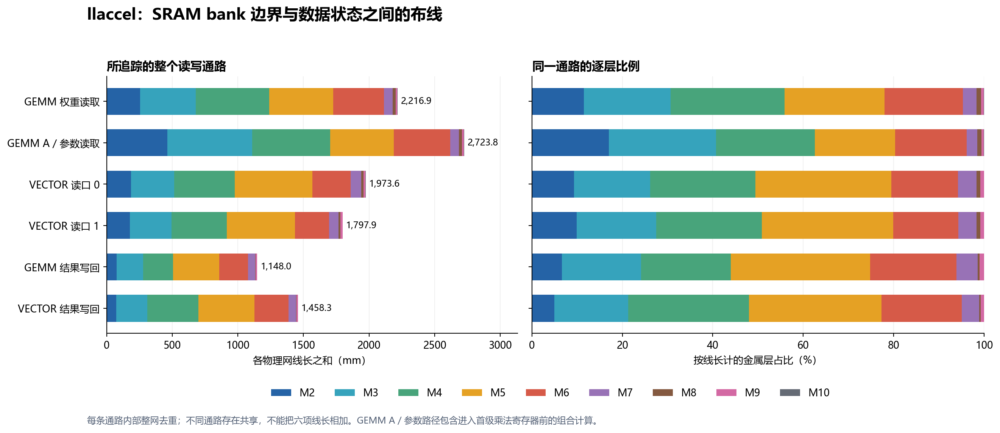
GEMM A／参数通路包含部分计算逻辑。其中 A 数据直接进入乘法组合逻辑，再由 prod 寄存器保存；参数和偏置进入各自寄存器。其 59.33% 不能当作“纯 crossbar 读取”的比例，也不能与其他项的绝对线长直接比较访存开销。
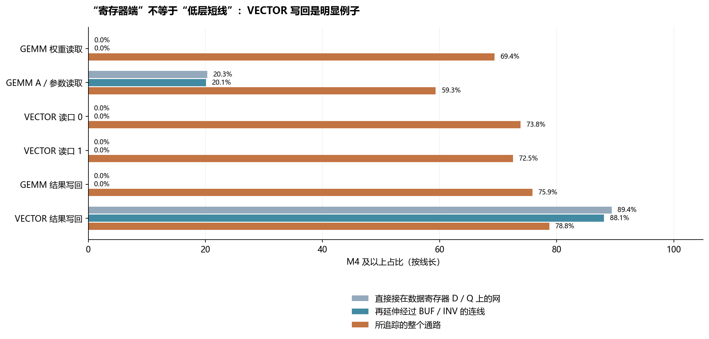
GEMM 权重读取：寄存器直接接线的 M4 及以上仅 0.02%，整个所追踪通路升为 69.36%。VECTOR 两个读口也是寄存器端 0%，整个通路分别为 73.84%、72.53%。
VECTOR 写回是另一种情况：结果寄存器直接接线就有 89.38% 的线长在 M4 及以上，经过 BUF／INV 延伸后为 88.06%，整个通路为 78.76%。因此，逻辑上刚离开一个模块或寄存器的线，也可能已经承担长距离分发。
展开端点覆盖与追踪范围
| 通路 | 具名数据寄存器覆盖 | bank 数据引脚覆盖 | 实际追踪范围 |
|---|---|---|---|
| GEMM 权重读取 | 4,096 / 4,096 | 2,048 / 2,048 | bank 读输入 → 两份权重缓冲的 D |
| GEMM A／参数读取 | 5,216 / 5,216 | 2,048 / 2,048 | bank 读输入 → prod、rq_m、rq_s、bias_v 的 D |
| VECTOR 读口 0 | 1,152 / 1,152 | 2,048 / 2,048 | bank 读输入 → FIFO 0 和分段保持寄存器的 D |
| VECTOR 读口 1 | 1,152 / 1,152 | 2,048 / 2,048 | bank 读输入 → FIFO 1 和分段保持寄存器的 D |
| GEMM 结果写回 | 512 / 512 | 2,048 / 2,048 | 两项输出 FIFO 的数据 Q／QN → bank 写输出 |
| VECTOR 结果写回 | 256 / 256 | 2,048 / 2,048 | 256 个结果寄存器的数据 Q／QN → bank 写输出 |
4096 个权重寄存器对应两份 2048 bit 权重缓冲。每个 VECTOR 读取组包含 1024 个 FIFO 数据寄存器和 128 个分段保持寄存器。GEMM 写回使用两项 FIFO 各 256 bit 的数据部分，明确排除了 FIFO 中的地址位。输出寄存器 Q 与 QN 都按实际模型检查，未参与路径的互补输出不算数据位缺失。全部所选数据寄存器均至少有一个数据输出／输入连接到对应 bank 边界。
展开每条通路逐层线长、均值与范围
| 通路 | 金属层 | 线长（μm） | 该层有线长的网数 | 每网该层均长（μm） | 最小—最大（μm） |
|---|---|---|---|---|---|
| GEMM：bank 读数据 → 权重缓冲 D | M10 | 1,480.00 | 9 | 164.44 | 59.20—420.80 |
| GEMM：bank 读数据 → 权重缓冲 D | M2 | 254,282.42 | 25475 | 9.98 | 0.01—536.97 |
| GEMM：bank 读数据 → 权重缓冲 D | M3 | 424,903.21 | 25343 | 16.77 | 0.01—522.07 |
| GEMM：bank 读数据 → 权重缓冲 D | M4 | 559,327.75 | 9522 | 58.74 | 0.14—514.50 |
| GEMM：bank 读数据 → 权重缓冲 D | M5 | 489,486.84 | 5938 | 82.43 | 0.28—576.52 |
| GEMM：bank 读数据 → 权重缓冲 D | M6 | 385,322.90 | 3547 | 108.63 | 0.04—560.84 |
| GEMM：bank 读数据 → 权重缓冲 D | M7 | 67,315.02 | 586 | 114.87 | 0.04—581.00 |
| GEMM：bank 读数据 → 权重缓冲 D | M8 | 20,964.80 | 220 | 95.29 | 0.80—492.80 |
| GEMM：bank 读数据 → 权重缓冲 D | M9 | 13,770.40 | 84 | 163.93 | 0.80—588.00 |
| GEMM：bank 读数据 → 乘法首级／参数状态 D | M10 | 1,696.00 | 13 | 130.46 | 32.00—299.20 |
| GEMM：bank 读数据 → 乘法首级／参数状态 D | M2 | 463,965.56 | 93564 | 4.96 | 0.01—536.97 |
| GEMM：bank 读数据 → 乘法首级／参数状态 D | M3 | 643,919.16 | 67317 | 9.57 | 0.01—522.07 |
| GEMM：bank 读数据 → 乘法首级／参数状态 D | M4 | 595,260.14 | 8741 | 68.10 | 0.14—651.14 |
| GEMM：bank 读数据 → 乘法首级／参数状态 D | M5 | 483,940.12 | 5533 | 87.46 | 0.28—576.52 |
| GEMM：bank 读数据 → 乘法首级／参数状态 D | M6 | 431,688.96 | 3510 | 122.99 | 0.04—695.80 |
| GEMM：bank 读数据 → 乘法首级／参数状态 D | M7 | 64,794.42 | 560 | 115.70 | 0.04—581.00 |
| GEMM：bank 读数据 → 乘法首级／参数状态 D | M8 | 25,400.00 | 234 | 108.55 | 0.80—492.80 |
| GEMM：bank 读数据 → 乘法首级／参数状态 D | M9 | 13,092.00 | 82 | 159.66 | 0.80—588.00 |
| VECTOR：bank 读数据 → 读口 0 缓冲 D | M10 | 720.00 | 5 | 144.00 | 76.80—273.60 |
| VECTOR：bank 读数据 → 读口 0 缓冲 D | M2 | 184,503.61 | 13947 | 13.23 | 0.02—536.97 |
| VECTOR：bank 读数据 → 读口 0 缓冲 D | M3 | 331,716.67 | 13638 | 24.32 | 0.01—522.07 |
| VECTOR：bank 读数据 → 读口 0 缓冲 D | M4 | 459,819.01 | 6953 | 66.13 | 0.14—514.50 |
| VECTOR：bank 读数据 → 读口 0 缓冲 D | M5 | 593,326.61 | 4923 | 120.52 | 0.28—628.32 |
| VECTOR：bank 读数据 → 读口 0 缓冲 D | M6 | 289,834.06 | 2802 | 103.44 | 0.04—560.84 |
| VECTOR：bank 读数据 → 读口 0 缓冲 D | M7 | 81,616.54 | 510 | 160.03 | 0.04—595.84 |
| VECTOR：bank 读数据 → 读口 0 缓冲 D | M8 | 15,780.00 | 166 | 95.06 | 0.80—492.80 |
| VECTOR：bank 读数据 → 读口 0 缓冲 D | M9 | 16,270.40 | 77 | 211.30 | 0.80—588.00 |
| VECTOR：bank 读数据 → 读口 1 缓冲 D | M10 | 483.20 | 3 | 161.07 | 96.00—273.60 |
| VECTOR：bank 读数据 → 读口 1 缓冲 D | M2 | 177,653.18 | 13436 | 13.22 | 0.02—536.97 |
| VECTOR：bank 读数据 → 读口 1 缓冲 D | M3 | 316,181.77 | 12981 | 24.36 | 0.01—522.07 |
| VECTOR：bank 读数据 → 读口 1 缓冲 D | M4 | 421,051.04 | 6410 | 65.69 | 0.14—514.50 |
| VECTOR：bank 读数据 → 读口 1 缓冲 D | M5 | 521,677.93 | 4444 | 117.39 | 0.28—656.88 |
| VECTOR：bank 读数据 → 读口 1 缓冲 D | M6 | 258,989.22 | 2522 | 102.69 | 0.04—560.84 |
| VECTOR：bank 读数据 → 读口 1 缓冲 D | M7 | 72,276.70 | 458 | 157.81 | 0.04—581.00 |
| VECTOR：bank 读数据 → 读口 1 缓冲 D | M8 | 14,427.20 | 145 | 99.50 | 0.80—492.80 |
| VECTOR：bank 读数据 → 读口 1 缓冲 D | M9 | 15,160.00 | 72 | 210.56 | 0.80—588.00 |
| GEMM：输出 FIFO 数据 Q → bank 写数据 | M2 | 75,795.21 | 8172 | 9.27 | 0.07—382.64 |
| GEMM：输出 FIFO 数据 Q → bank 写数据 | M3 | 201,289.08 | 9282 | 21.69 | 0.01—432.25 |
| GEMM：输出 FIFO 数据 Q → bank 写数据 | M4 | 227,767.26 | 4233 | 53.81 | 0.14—456.12 |
| GEMM：输出 FIFO 数据 Q → bank 写数据 | M5 | 353,614.52 | 3295 | 107.32 | 0.28—534.52 |
| GEMM：输出 FIFO 数据 Q → bank 写数据 | M6 | 219,628.67 | 2491 | 88.17 | 0.08—591.36 |
| GEMM：输出 FIFO 数据 Q → bank 写数据 | M7 | 53,645.20 | 346 | 155.04 | 0.04—606.48 |
| GEMM：输出 FIFO 数据 Q → bank 写数据 | M8 | 4,455.20 | 61 | 73.04 | 0.80—373.60 |
| GEMM：输出 FIFO 数据 Q → bank 写数据 | M9 | 11,819.20 | 56 | 211.06 | 22.40—485.60 |
| VECTOR：结果寄存器 Q → bank 写数据 | M2 | 72,636.46 | 6335 | 11.47 | 0.07—382.64 |
| VECTOR：结果寄存器 Q → bank 写数据 | M3 | 237,179.77 | 8051 | 29.46 | 0.01—432.25 |
| VECTOR：结果寄存器 Q → bank 写数据 | M4 | 390,322.97 | 4875 | 80.07 | 0.14—606.90 |
| VECTOR：结果寄存器 Q → bank 写数据 | M5 | 427,460.88 | 3888 | 109.94 | 0.28—534.52 |
| VECTOR：结果寄存器 Q → bank 写数据 | M6 | 258,489.91 | 2750 | 94.00 | 0.08—553.84 |
| VECTOR：结果寄存器 Q → bank 写数据 | M7 | 56,483.88 | 369 | 153.07 | 0.04—606.48 |
| VECTOR：结果寄存器 Q → bank 写数据 | M8 | 4,354.40 | 59 | 73.80 | 0.80—360.00 |
| VECTOR：结果寄存器 Q → bank 写数据 | M9 | 11,380.80 | 55 | 206.92 | 14.40—485.60 |
样本为每条物理网在某一金属层上的总长，均值和范围只统计该层有正线长的网；不是几何线段长度分布。
共享很多，不能当成各模块的独占布线
GEMM 与 VECTOR 写回共同涉及 974.02 mm 的整网线长；它占 GEMM 写回视图约 84.84%，占 VECTOR 写回视图约 66.79%。它们经过共同的 bank 输出网络，重叠并不是两个模块各自拥有一份同样的线。
四组读取也共享 bank 输入分发。所有 2048 个 bank 读数据引脚都能通过选择逻辑连向每组所选读状态；这表示选择不同 bank 时的结构可能性，不表示每个读口同时接收 2048 bit，也不表示这些连接在一个周期中全部有效。
展开不同通路的共同物理网
| 共享的两条通路 | 共同物理网数 | 共同整网线长（mm） |
|---|---|---|
| GEMM_WEIGHT & VECTOR_A | 10,191 | 1,616.34 |
| GEMM_WEIGHT & VECTOR_B | 9,657 | 1,526.91 |
| GEMM_AUX & GEMM_WEIGHT | 10,399 | 1,647.45 |
| GEMM_AUX & VECTOR_A | 10,182 | 1,604.29 |
| GEMM_AUX & VECTOR_B | 9,662 | 1,519.24 |
| VECTOR_A & VECTOR_B | 9,870 | 1,546.03 |
| GEMM_WRITE & VECTOR_WRITE | 6,589 | 974.02 |
11.1 核心对外 bank 引脚：按功能区分
这一视角的边界最明确：读取数据、写入数据、地址、字节掩码和使能分别统计。这里只统计直接接在顶层 bank 引脚上的物理网，不把中间缓冲级一起展开。表中的金属层是走线所在层，不是引脚形状所在层。
| 对外功能 | 实际物理网数 | 声明位数 | 直接整网线长（μm） | M4 及以上 |
|---|---|---|---|---|
| bank 读数据 → 核心 | 2,048 | 2048 | 543,858.31 | 85.15% |
| 核心 → bank 写数据 | 2,048 | 2048 | 363,311.32 | 79.89% |
| bank 地址 | 256 | 256 | 4,409.69 | 65.33% |
| bank 字节写掩码 | 256 | 256 | 600.98 | 54.46% |
| bank 使能 | 16 | 16 | 137.72 | 60.38% |
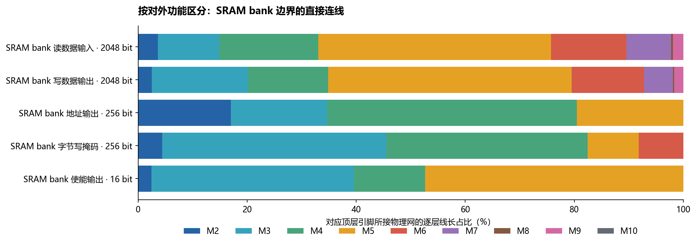
地址和控制线的数量及直接总线长比数据线小。这个结果只描述当前引脚与放置结果；没有 SRAM 宏位置和时序数据，不能据此推出这些控制信号天然更近、更快，或者不需要长距离互联。
12. llaccel：访存通路中的单元实际在哪里？
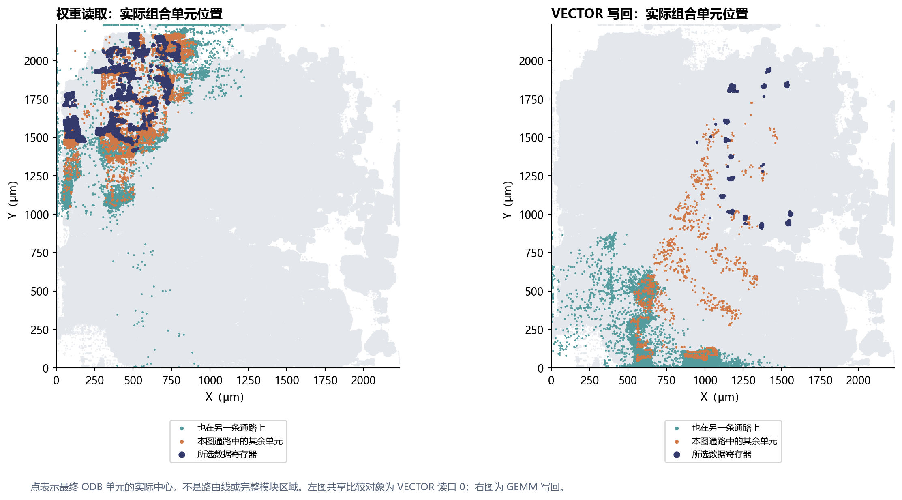
crossbar 的组合网络在综合后大量变成匿名标准单元。旧分类中只有少量仍保留 u_xbar 名称的单元，不能据此认为 crossbar 只有几个门。本次从真实 bank 数据引脚与具名数据状态之间反向、正向相交，恢复了这些访存通路参与的组合单元。
13. 怎样读这些统计，哪些内容已经确认？
| 需要分开的量 | 解释 |
|---|---|
| 命名端口数 / 声明 bit 数 | 一个命名端口可以是多位向量；宽度是接口声明，不等于有同样数量的独立物理网。 |
| 逻辑 bit / 物理 net | 一个 bit 经缓冲分发可对应多条 net；常量、别名、优化也可使声明位没有独立保留线路。 |
| 引脚所在层 / 沿途金属层 | 引脚形状可以在某一层，连接网通过过孔进入其他层；两类统计不可混为一谈。 |
| 单条 net / 功能通路的线长合计 | 通路可能包含多级逻辑、寄存器、分支及多份存储副本；总长不是一条线的距离，也不是时延。 |
| 共享线路 / 独占线路 | 一条宏数据网可以服务多个访问方；同一物理 net 在一个统计组内只计一次，不同视图或访问方之间仍可能重合。 |
在 openTPU MXU 完整写路径中，可被其他写端口的数据到达的共享 net 占线长约 96.78%；完整读路径中，也能通向其他读端口的 net 占约 98.67%。llaccel 的 GEMM 与 VECTOR 写回也共享大量 bank 输出网络。这些结果说明长距离存储线路很大一部分是共享设施；结构可达不表示各端口同时传输。
| 案例 | 当前数据追踪的起止边界 | 是否穿过数据寄存器 | 读图时的限制 |
|---|---|---|---|
| Gemmini | 顶层真实信号引脚及其电连接 | 不作为完整计算通路继续穿过 | 是 MeshWithDelays 接口，不能等同完整加速器 |
| openTPU | 逻辑数据接口 ↔ TMEM SRAM 宏引脚 | 在 TMEM 内按 D→Q/QN 继续 | 有实际 SRAM 宏；不同访问方共享整网长度 |
| llaccel | 具名数据寄存器 D/Q ↔ core 的 bank 引脚 | 不越过任何寄存器 | 无 SRAM 存储宏；GEMM A 路径包含首级乘法前的组合逻辑 |
llaccel 的寄存器端连线并非逐位恢复出的原始模块接口线。不能用它与 openTPU 的原始接口统计直接排名，也不能把本次 16-bank 引脚示意误认为 SRAM 宏的真实摆放。
| 分析内容 | 状态与边界 |
|---|---|
| Gemmini 的接口及引脚层 | 357 个信号 bit 已与原始 RTL、物理边界引脚核对；沿接口网统计，不延伸为整个阵列数据通路。 |
| MXU / VPU / TMEM 的逻辑接口 | 声明、未启用配置、物理定位分别记录；未找到可靠名称的位不补猜布线。 |
| ACT_RAM 的逻辑接口 | 19 个端口、220 输入／640 输出已由原始展开网表核对；512＋128 bit 读出连接已物理定位。 |
| MXU↔TMEM、VPU↔TMEM 数据路径 | 已穿过 TMEM 数据逻辑及寄存器，补全至 SRAM 数据引脚；写旁路另存，不混入 SRAM 存储读出路径。 |
| 地址、使能、仲裁、状态路径 | 已有接口连接统计；未在本报告统一补全穿过所有 TMEM 逻辑的完整路径。 |
| 量化器 → ACT_RAM 完整写路径 | 职责与声明已解释；跨多个写流水级至 SRAM 的线长未在本次重新逐段补算。 |
| llaccel GEMM / VECTOR 接口 | RTL 声明位宽及功能已核对；大量原始接口线名消失，采用具名数据状态建立可靠物理端点。 |
| llaccel 六组 SRAM 读写通路 | 已追踪具名数据状态与 bank 引脚之间的组合连接；全部所选数据寄存器均与相应 bank 边界相连。 |
| llaccel ATTENTION / DMA / DRAM | 已在系统关系图交代用途；本次没有为其新增完整逐功能数据路径布线统计。 |
| 布局原因与优化收益 | 已有实际位置和层分布；布局工具的具体取舍、改放置后的收益，需要对应约束和受控重跑验证。 |
展开：提取方法、共享分支、过孔与校验
接口提取从原始分层网表端口的同线别名出发，在最终布线数据中查找，并只沿库模型确认的单输入 BUF/INV 延伸；不会把 MUX 或寄存器两侧当成同一根电线。共享控制信号的分发可能延伸到模块内部。
完整 TMEM 数据路径从指定数据接口到 SRAM 写数据引脚，或从 SRAM 读数据引脚到指定接收接口，求正向和反向结构可达集合的交集。组合逻辑根据输出函数依赖追踪；MUX 只沿 A/B 数据输入，不沿 S 控制；寄存器只沿 D→Q/QN，不沿时钟、复位。不会穿过存储状态或外部计算单元的运算逻辑。
一个 net 若包含通向其他负载的实际电气分支，其全部布线长度仍计入，不能在没有路径几何拆分依据时只截取某条逻辑支路。每组内部用最终 net ID 去重；不同接口、访问方和完整路径视图的长度不可直接相加。
长度为金属中心线在平面内的长度，不含过孔的垂直高度、宏内部金属和电源地。openTPU 使用 2000 DBU/μm；Gemmini 的提取按其原始工艺数据库比例换算。金属层占比按长度计算，不按信号位数计算。
通过检查：逐 net 各层线长之和等于总长；MXU 读写分段互斥且合成完整路径；MXU/VPU 指定数据接口全部接到相应 SRAM 数据引脚；无未支持的 TMEM 单元模型或多驱动引起的弧拒绝；同一案例各次提取的网络摘要一致。结构可达不等于特定周期活动、满足全部选择条件的时序仿真或跨综合阶段的形式等价证明。
14. 数据与复核材料
正文保留所有关键图；完整端口表、较长统计表和方法说明在各节折叠区。三个案例在本页统一阅读，原始分析数据按案例保存。
Gemmini / openTPU
Gemmini / openTPU：RTL、配置与原始接口记录
ACT_RAM 源码快照取自已核对提交 f237dab2f196855a59a083b1454786df8f01291f；其实际展开端口另从该案例原始 mapped.json 提取。源码中历史 FPGA 布局／时序注释不作为当前 ASIC 路由原因的证据。
llaccel
使用现有冻结的最终 ODB 提取结果；未重跑布局布线，未改动主报告。共检查 998,787 个非填充单元、1,216,339 条物理网和 2,258,123 条门内组合依赖。全局线长仍为 27,102,416.200 μm，与原提取一致。
- 所有参与建图的标准单元都有 Liberty 模型；零个因多驱动而拒绝的组合连接。
- 组合门按照输出函数中的实际输入依赖追踪；MUX 只从 A／B 数据脚穿过，不从选择脚 S 穿过。
- 不越过任何寄存器；时钟、复位不参与数据路径。bank 存储体位于本次版图之外。
- 正向可达与反向可达取交集，得到从所选起点到终点的结构可能通路；未做逐周期仿真或信号条件化时序验证。
- 每条通路内部每个物理网只计一次；整条电气网的所有路由分支都计长，并未把同一网的分支按用途分摊。因此“在通路上”不等于全部线长由该通路独占。
展开源码、输入和统计文件
ODB SHA256：8651474a2a9acd52f97a8eaff6bc52f69eb19b19326f1af36e56d8edf4a57eac
配置：EPILOGUE_FUSION=0，DMA_MAX_OUTSTANDING=16；源码快照 f7db8a22791a1ce9dc13e7c90b0b9b9386169aa5。
完整统计与方法 · 逐层线长、均值和范围 CSV · RTL 端口位宽 · 具名寄存器端点 · 物理网编号与分组 · 通路实际单元坐标 · crossbar RTL 副本 · 门功能模型
连接追踪脚本 · 图表与 HTML 生成脚本 · 另见：已有引擎内部布局与功能细分分析
输入依赖同级目录 llaccel-engine-analysis-20261020/compact_physical_evidence.jsonl.gz。主报告和线长报告均未修改。